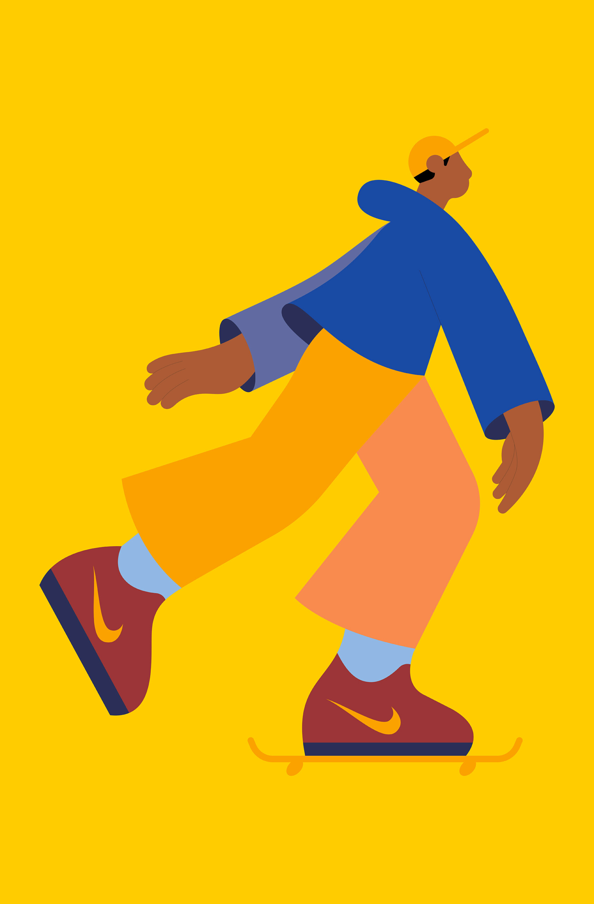
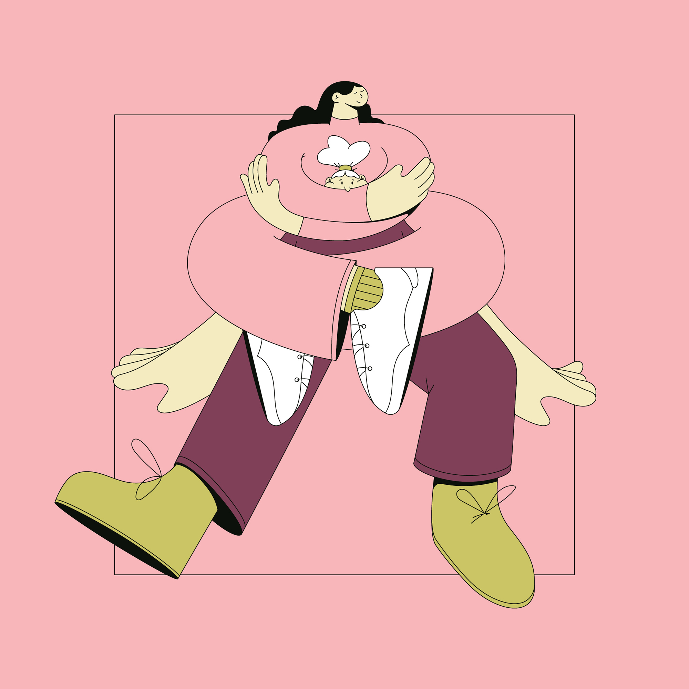
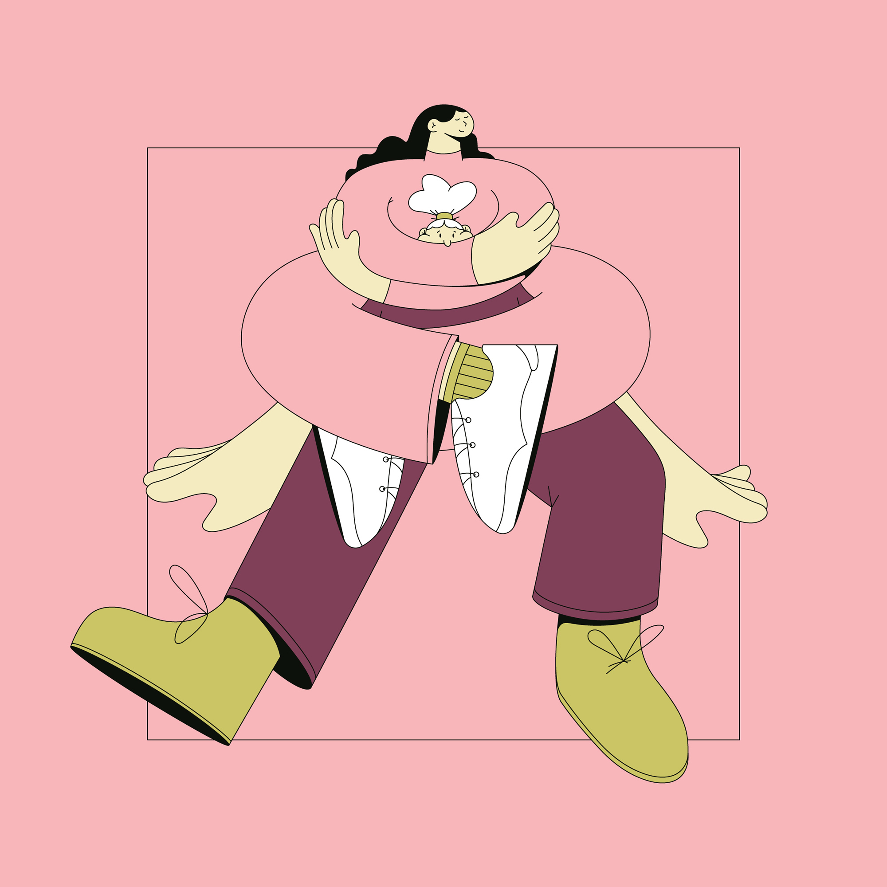

Swedish illustrator, designer and animator Linn Fritz lives
and works in London where she creates charmingly clean,
precise imagery in a trademark pastel palette for a wide
range of editorial and commercial clients. Her neat, fluid
line work was honed during her time at Hyper Island, a
time which Linn cites as “hands down one of the best
experiences” of her life. “My Hyper Island journey
completely changed me as a person.” she says, “It pushed
me to work harder and gave me the tools to succeed in the
real world.” The progressive nature of Hyper Island led Linn
to abandon pen and paper and concentrate on what digital
could offer her already well-honed drawings. As she puts
it, “There’s more freedom drawing digitally, and more room
for mistakes.”
Alongside her editorial and commercial projects, Linn is the
co-founder of Panimation, “a community of equality-driven
women, trans and non-binary friends aiming to connect
and support each other within the animation industry.”
Some of her favorite projects often orbit around her
interests of “feminism, clothes, plants and interior” but Linn
also looks for a good client relationship, one with trust and
creative freedom.



 
